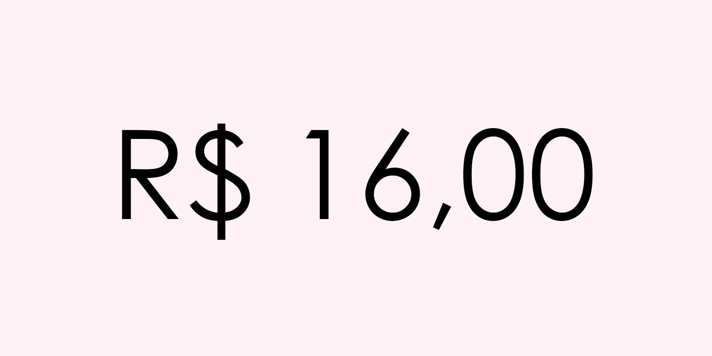

| |
|

|
| ◄ | ► |
| É uma espécie de bala de geleia no formato de um grão de feijão que foi criada no ano de 1976 na cidade de Los Angeles, na Califórnia, por uma empresa fundada por dois imigrantes alemães. As Jelly Beans podem ser encontradas em uma infinidade de sabores inimagináveis! |